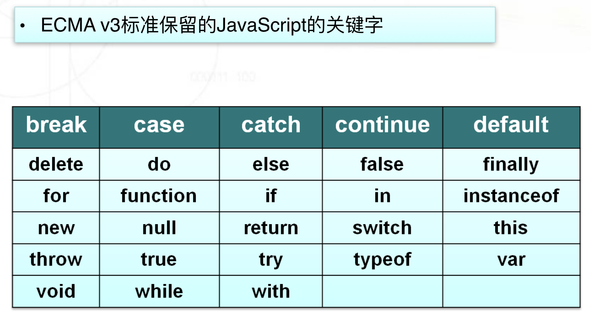
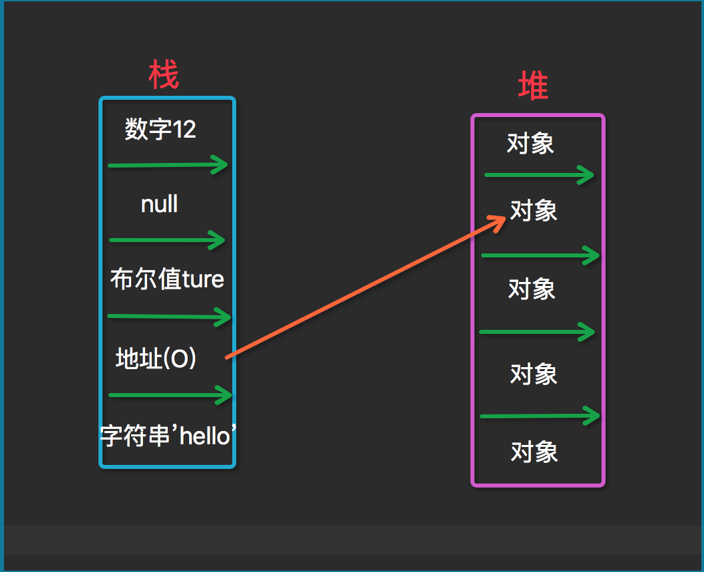
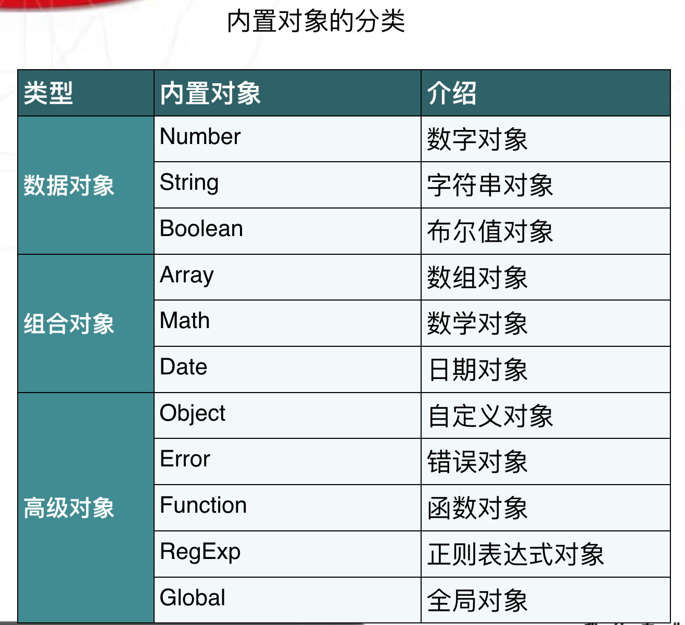
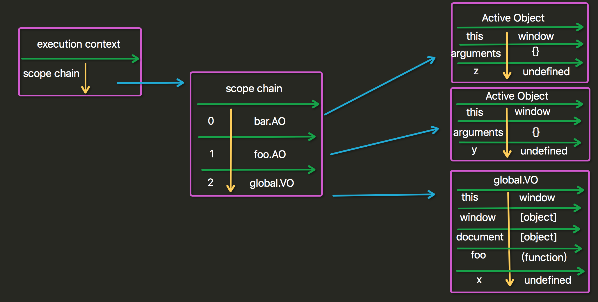

JavaScript 的基础 JavaScript概述 尽管 ECMAScript 是一个重要的标准，但它并不是 JavaScript 唯一的部分，当然，也不是唯一被标准化的部分。实际上，一个完整的 JavaScript 实现是由以下 3 个不同部分组成的：
核心（ECMAScript）
文档对象模型（DOM） Document object model (整合js，css，html)
浏览器对象模型（BOM） Broswer object model（整合js和浏览器）
Javascript 在开发中绝大多数情况是基于对象的.也是面向对象的.
简单地说，ECMAScript 描述了以下内容：
语法
类型
语句
关键字
保留字
运算符
对象 (封装 继承 多态) 基于对象的语言.使用对象.
JavaScript的引入方式 1 2 3 4 5 6 {#1 直接编写#} <script> alert('hello yuan' ) </script> {#2 导入文件#} <script src="hello.js" ></script>
JavaScript的基础 变量 在代数中，我们使用字母（比如 x）来保存值（比如 5）。
通过上面的表达式 z=x+y，我们能够计算出 z 的值为 11。
在 JavaScript 中，这些字母被称为变量。
0 变量是弱类型的(很随便)；
1 声明变量时不用声明变量类型. 全都使用var关键字;
2 一行可以声明多个变量.并且可以是不同类型.
1 var name="yuan", age=20, job="lecturer";
3 声明变量时 可以不用var. 如果不用var 那么它是全局变量.
为了防止忘记使用var，造成不同的js文件间全局变量互相赋值，在文件开头加上use strict
4 变量命名,首字符只能是字母,下划线,$美元符 三选一，且区分大小写，x与X是两个变量
5 变量还应遵守以下某条著名的命名规则：
1 2 3 4 5 6 7 8 9 Camel 标记法 首字母是小写的，接下来的字母都以大写字符开头。例如： var myTestValue = 0 , mySecondValue = "hi" ;Pascal 标记法 首字母是大写的，接下来的字母都以大写字符开头。例如： Var MyTestValue = 0 , MySecondValue = "hi" ; 匈牙利类型标记法 在以 Pascal 标记法命名的变量前附加一个小写字母（或小写字母序列），说明该变量的类型。例如，i 表示整数，s 表示字符串，如下所示“ Var iMyTestValue = 0 , sMySecondValue = "hi" ;
基础规范 1 每行结束可以不加分号. 没有分号会以换行符作为每行的结束
1 2 a=1 ;b=2 ; a=1 b=2 ;------错误
2 注释 支持多行注释和单行注释. /* */ //
3 使用{}来封装代码块
常量和标识符 常量 ：直接在程序中出现的数据值
标识符 ：
由不以数字开头的字母、数字、下划线(_)、美元符号($)组成
常用于表示函数、变量等的名称
例如：_abc,$abc,abc,abc123是标识符，而1abc不是
JavaScript语言中代表特定含义的词称为保留字，不允许程序再定义为标识符

数据类型 image 
数字类型(Number) 1 2 3 4 5 6 简介 最基本的数据类型 不区分整型数值和浮点型数值 所有数字都采用64位浮点格式存储，相当于Java和C语言中的double格式 能表示的最大值是±1.7976931348623157 x 10308 能表示的最小值是±5 x 10 -324
整数：
16进制和8进制数的表达
1 2 # 2进制: 1111 0011 1101 0100 <-----> 16进制:0xF3D4 <-----> 10进制:62420 # 2进制: 1 111 001 111 010 100 <-----> 8进制:0171724
字符串(String) 1 2 3 4 5 6 是由Unicode字符、数字、标点符号组成的序列 字符串常量首尾由单引号或双引号括起 JavaScript中没有字符类型 常用特殊字符在字符串中的表达 字符串中部分特殊字符必须加上右划线\ 常用的转义字符 \n:换行 \':单引号 \":双引号 \\:右划线
String数据类型的使用
特殊字符的使用方法和效果
Unicode的插入方法
1 2 3 4 <script> var str="\u4f60\u597d\n欢迎来到\"JavaScript世界\"" ; alert(str); </script>
布尔型(Boolean) 1 Boolean类型仅有两个值：true和false，也代表1和0，实际运算中true=1,false=0
Null & Undefined Undefined 类型
Undefined 类型只有一个值，即 undefined。当声明的变量未初始化时，该变量的默认值是 undefined。
当函数无明确返回值时，返回的也是值 “undefined”;
Null 类型
另一种只有一个值的类型是 Null，它只有一个专用值 null，即它的字面量。值 undefined 实际上是从值 null 派生来的，因此 ECMAScript 把它们定义为相等的。
尽管这两个值相等，但它们的含义不同。undefined 是声明了变量但未对其初始化时赋予该变量的值，null 则用于表示尚未存在的对象（在讨论 typeof 运算符时，简单地介绍过这一点）。如果函数或方法要返回的是对象，那么找不到该对象时，返回的通常是 null。
数据类型转换 1 2 3 4 JavaScript属于松散类型的程序语言 变量在声明的时候并不需要指定数据类型 变量只有在赋值的时候才会确定数据类型 表达式中包含不同类型数据则在计算过程中会强制进行类别转换
数字 + 字符串：数字转换为字符串
数字 + 布尔值：true转换为1，false转换为0
字符串 + 布尔值：布尔值转换为字符串true或false
强制类型转换函数
1 2 3 4 5 函数parseInt： 强制转换成整数 例如parseInt("6.12")=6 ; parseInt(“12a")=12 ; parseInt(“a12")=NaN ;parseInt(“1a2")=1 函数parseFloat： 强制转换成浮点数 parseFloat("6.12")=6.12 函数eval： 将字符串强制转换为表达式并返回结果 eval("1+1")=2 ; eval("1<2")=true
类型查询函数(typeof ) ECMAScript 提供了 typeof 运算符来判断一个值是否在某种类型的范围内。可以用这种运算符判断一个值是否表示一种原始类型：如果它是原始类型，还可以判断它表示哪种原始类型。
1 2 3 4 5 函数typeof ：查询数值当前类型 (string / number / boolean / object ) 例如typeof("test"+3) "string" 例如typeof(null) "object " 例如typeof(true+1) "number" 例如typeof(true-false) "number"
ECMAScript 运算符 ECMAScript 算数运算符 1 2 3 4 5 加(＋)、 减(－)、 乘(*) 、除(/) 、余数(% ) 加、减、乘、除、余数和数学中的运算方法一样 例如：9/2=4.5，4*5=20，9%2=1 -除了可以表示减号还可以表示负号 例如：x=-y +除了可以表示加法运算还可以用于字符串的连接 例如："abc"+"def"="abcdef"
递增(＋＋) 、递减(－－)
1 2 3 4 5 6 7 8 9 假如x=2 ，那么x++表达式执行后的值为3 ，x--表达式执行后的值为1 i++相当于i=i+1 ，i--相当于i=i-1 递增和递减运算符可以放在变量前也可以放在变量后：--i var i=1 ;console .log(i++); #先执行后加法console .log(++i); #先加法后执行console .log(i--);console .log(--i);
一元加减法：
1 2 3 4 5 6 7 8 9 10 11 12 13 14 15 16 17 18 19 20 21 22 23 24 var a=1 ;var b=1 ;a=-a; var c="10" ;alert(typeof (c)); c=+c; alert(typeof (c)); var d="yuan" ;d=+d; alert(d); alert(typeof (d)); var n=NaN ;alert(n>3 ); alert(n<3 ); alert(n==3 ); alert(n==NaN ); alert(n!=NaN );
ECMAScript 逻辑运算符 1 2 3 4 5 6 7 8 等于 ( == ) 、不等于( != ) 、 大于( > ) 、 小于( < ) 大于等于(>=) 、小于等于(<=) 与 (&&) 、或(||) 、非(!) 1 && 1 = 1 1 || 1 = 1 1 && 0 = 0 1 || 0 = 1 0 && 0 = 0 0 || 0 = 0 !0=1 !1=0
逻辑 AND 运算符(&&) 逻辑 AND 运算的运算数可以是任何类型的，不止是 Boolean 值。
如果某个运算数不是原始的 Boolean 型值，逻辑 AND 运算并不一定返回 Boolean 值：
如果某个运算数是 null，返回 null。
如果某个运算数是 NaN，返回 NaN。
如果某个运算数是 undefined，返回undefined。
逻辑 OR 运算符(||) 与逻辑 AND 运算符相似，如果某个运算数不是 Boolean 值，逻辑 OR 运算并不一定返回 Boolean 值
ECMAScript 赋值运算符 1 2 3 4 5 6 7 赋值 = JavaScript中=代表赋值，两个等号==表示判断是否相等 例如，x=1表示给x赋值为1 if (x==1){...}程序表示当x与1相等时 if(x==“on”){…}程序表示当x与“on”相等时 配合其他运算符形成的简化表达式 例如i+=1相当于i=i+1，x&=y相当于x=x&y
实例：
1 2 3 4 5 6 7 8 9 10 2 == “2 ” #进行类型转换后比较2 === “2 ” #不进行类型转换直接进行比较 4 != “4 ” 4 !== “4 ” var a = 2 ; var b = 4 ;var c = a<b | --b>--a;var c = a<b || --b>--a; var c = a<b &&--b>--a; var c = a<b & --b>--a;
ECMAScript等性运算符 执行类型转换的规则如下：
如果一个运算数是 Boolean 值，在检查相等性之前，把它转换成数字值。false 转换成 0，true 为 1。
如果一个运算数是字符串，另一个是数字，在检查相等性之前，要尝试把字符串转换成数字。
如果一个运算数是对象，另一个是字符串，在检查相等性之前，要尝试把对象转换成字符串。
如果一个运算数是对象，另一个是数字，在检查相等性之前，要尝试把对象转换成数字。
在比较时，该运算符还遵守下列规则：
值 null 和 undefined 相等。
在检查相等性时，不能把 null 和 undefined 转换成其他值。
如果某个运算数是 NaN，等号将返回 false，非等号将返回 true。
如果两个运算数都是对象，那么比较的是它们的引用值。如果两个运算数指向同一对象，那么等号返回 true，否则两个运算数不等。
ECMAScript 关系运算符 (重要) 1 2 var bResult = "Blue" < "alpha" ;alert(bResult);
在上面的例子中，字符串 “Blue” 小于 “alpha”，因为字母 B 的字符代码是 66，字母 a 的字符代码是 97。
比较数字和字符串
另一种棘手的状况发生在比较两个字符串形式的数字时，比如：
1 2 var bResult = "25" < "3" ;alert(bResult);
上面这段代码比较的是字符串 “25” 和 “3”。两个运算数都是字符串，所以比较的是它们的字符代码（”2” 的字符代码是 50，”3” 的字符代码是 51）。
不过，如果把某个运算数该为数字，那么结果就有趣了：
1 2 var bResult = "25" < 3 ;alert(bResult);
这里，字符串 “25” 将被转换成数字 25，然后与数字 3 进行比较，结果不出所料。
总结：
1 2 比较运算符两侧如果一个是数字类型,一个是其他类型,会将其类型转换成数字类型. 比较运算符两侧如果都是字符串类型,比较的是最高位的asc码,如果最高位相等,继续取第二位比较.
Boolean运算符 1 2 3 4 5 6 7 var temp=new Object ();if (temp){ console .log("yuan" ) }else { console .log("alex" ) }
全等号和非全等号 等号和非等号的同类运算符是全等号和非全等号。这两个运算符所做的与等号和非等号相同，只是它们在检查相等性前，不执行类型转换。
控制语句 if 控制语句 1 2 3 4 5 6 7 8 9 10 11 if -else 基本格式if (表达式){语句１; ...... }else { 语句２; ..... } 功能说明 如果表达式的值为true 则执行语句1 , 否则执行语句2
switch 选择控制语句 1 2 3 4 5 6 7 switch 基本格式switch (表达式) { case 值1 :语句1 ;break ; case 值2 :语句2 ;break ; case 值3 :语句3 ;break ; default :语句4 ; }
for 循环控制语句 1 2 3 4 5 6 7 for循环基本格式 for (初始化;条件;增量){ 语句1; ... } 功能说明 实现条件循环，当条件成立时，执行语句1，否则跳出循环体
1 2 3 4 5 6 7 8 9 10 11 12 13 14 15 16 for (var i=1 ;i<=7 ;i++){ document .write("<H" +i+">hello</H " +i+"> " ); document .write("<br>" ); } ---------------------------------------------- ----- 不推荐--------------- var arr=[1 ,"hello" ,true ]for (var i in arr){ console .log(i) console .log(arr[i]) }
注意：
1 2 3 4 5 6 7 8 9 10 11 12 13 14 doms=document .getElementsByTagName("p" ); for (var i in doms){ console .log(i); } for (var i=0 ;i<doms.length;i++){ console .log(i) ; }
while 循环控制语句 1 2 3 4 5 while循环基本格式 while (条件){ 语句1； ... }
1 2 3 4 5 6 7 var i=1 ;while (i<=7 ) { document .write("<H" +i+">hello</H " +i+"> " ); document .write("<br>" ); i++; }
1 2 3 4 5 6 7 8 9 10 11 12 <script language="JavaScript" > function sayHello ( var hellostr; var myname=prompt("请问您贵姓？" ,"苑" ); hellostr="您好，" +myname+'先生，欢迎进入"探索之旅"！' ; alert(hellostr); document .write(hellostr); } sayHello(); </script>
异常处理 1 2 3 4 5 6 7 8 9 10 try { } catch (e) { } finally { }
ECMA对象 从传统意义上来说，ECMAScript 并不真正具有类。事实上，除了说明不存在类，在 ECMA-262 中根本没有出现“类”这个词。ECMAScript 定义了“对象定义”，逻辑上等价于其他程序设计语言中的类。
var o = new Object();
对象的概念与分类：
由ECMAScript定义的本地对象.独立于宿主环境的 ECMAScript 实现提供的对象.(native object)
ECMAScript 实现提供的、独立于宿主环境的所有对象，在 ECMAScript 程序开始执行时出现.这意味着开发者不必明确实例化内置对象，它已被实例化了。ECMA-262 只定义了两个内置对象，即 Global 和 Math （它们也是本地对象，根据定义，每个内置对象都是本地对象）。（built-in object）
所有非本地对象都是宿主对象（host object），即由 ECMAScript 实现的宿主环境提供的对象。所有 BOM 和 DOM 对象都是宿主对象。
object对象 ：ECMAScript 中的所有对象都由这个对象继承而来；Object 对象中的所有属性和方法都会出现在其他对象中
1 2 ToString() : 返回对象的原始字符串表示。 ValueOf() : 返回最适合该对象的原始值。对于许多对象，该方法返回的值都与 ToString() 的返回值相同。
11种内置对象 包括：
Array ,String , Date, Math, Boolean, Number Function, Global, Error, RegExp , Object
简介：
在JavaScript中除了null和undefined以外其他的数据类型都被定义成了对象，也可以用创建对象的方法定义变量，String、Math、Array、Date、RegExp都是JavaScript中重要的内置对象，在JavaScript程序大多数功能都是通过对象实现的
1 2 3 4 5 6 7 8 9 10 <script language="javascript" > var aa=Number .MAX_VALUE; var bb=new String ("hello JavaScript" ); var cc=new Date ();var dd=new Array ("星期一" ,"星期二" ,"星期三" ,"星期四" ); </script>

String对象 自动创建字符串对象：
1 2 3 var str1="hello world" ;alert(str1.length); alert(str1.substr(1 ,5 ));
调用字符串的对象属性或方法时自动创建对象，用完就丢弃
手工创建字符串对象
1 2 3 var str1= new String ("hello word" );alert(str1.length); alert(str1.substr(1 ,3 ));
采用new创建字符串对象str1，全局有效
String对象的属性 var str1=”String对象”;
var str2=””;
alert(“str1长度 “+str1.length);
alert(“str2长度 “+str2.length);
String对象的方法(1) —— 格式编排方法
格式编排方法返回值列表
1 2 3 4 5 6 7 8 9 书写格式: String 对象提供了一组针对HTML格式的方法，如x.anchor()返回锚定义字符串<a>x</a>，x.bold()返回粗体表示字符串<b>x</b>，x.sup()返回上标格式字符串<sup>x</ sup>。 ----------------------------------------- var x="yuan" ;var y="x.italics():" +x.italics();document .write(y.fontsize(10 ));
String对象的方法(2)—— 大小写转换
1 2 3 4 5 6 7 8 var str1="AbcdEfgh" ; var str2=str1.toLowerCase();var str3=str1.toUpperCase();alert(str2); alert(str3);
String对象的方法(3) —— 获取指定字符
1 2 3 4 5 6 7 8 9 10 11 12 13 14 15 16 17 18 19 20 21 22 书写格式 x.charAt(index) x.charCodeAt(index) 使用注解 x代表字符串对象 index代表字符位置 index从0 开始编号 charAt返回index位置的字符 charCodeAt返回index位置的Unicode编码 ---------------------- var str1="welcome to the world of JS! 苑昊" ;var str2=str1.charAt(28 );var str3=str1.charCodeAt(28 );alert(str2); alert(str3);
String对象的方法(4)—— 查询字符串
1 2 3 4 5 6 7 8 9 10 11 12 13 14 15 16 17 18 19 20 21 22 23 24 25 26 27 28 29 30 31 32 33 34 35 36 37 38 39 40 var str1="welcome to the world of JS!" ;var str2=str1.indexOf("l" );var str3=str1.lastIndexOf("l" );alert(str2); alert(str3); var str1="welcome to the world of JS!" ;var str2=str1.match("world" );var str3=str1.search("world" );alert(str2[0 ]); alert(str3);
String对象的方法(5) ——子字符串处理
截取子字符串
1 2 3 4 5 6 7 8 9 10 11 12 13 14 15 16 17 18 19 20 21 22 23 24 25 26 27 28 29 30 31 32 33 34 35 36 37 38 39 40 41 42 43 44 45 46 var str1="abcdefgh" ;var str2=str1.substr(2 ,4 );var str3=str1.substring(2 ,4 );alert(str2); alert(str3); var str1="abcdefgh" ;var str2=str1.slice(2 ,4 );var str3=str1.slice(4 );var str4=str1.slice(2 ,-1 );var str5=str1.slice(-3 ,-1 );alert(str2); alert(str3); alert(str4); alert(str5);
替换子字符串
1 2 3 4 5 6 var str1="abcdefgh" ;var str2=str1.replace("cd" ,"aaa" );alert(str2);
分割字符串
1 2 3 4 5 6 var str1="一,二,三,四,五,六,日" ; var strArray=str1.split("," );alert(strArray[1 ]);
连接字符串
1 2 3 4 5 6 7 8 9 10 11 12 13 var str1="abcd" ; var str2=str1.concat("efgh" );alert(str2);
Array对象 创建数组对象 1 2 3 4 5 6 7 8 9 10 11 12 13 14 15 16 17 18 19 Array 对象用于在单个的变量中存储多个值。语法: 创建方式1 : var a=[1 ,2 ,3 ];创建方式2 : new Array (); new Array (size); 初始化数组对象: var cnweek=new Array (7 ); cnweek[0 ]="星期日" ; cnweek[1 ]="星期一" ; ... cnweek[6 ]="星期六" ; new Array (element0, element1, ..., elementn)var test=new Array (100 ,"a" ,true );
创建二维数组 1 2 3 4 5 6 7 8 9 10 11 var cnweek=new Array (7 );for (var i=0 ;i<=6 ;i++){ cnweek[i]=new Array (2 ); } cnweek[0 ][0 ]="星期日" ; cnweek[0 ][1 ]="Sunday" ; cnweek[1 ][0 ]="星期一" ; cnweek[1 ][1 ]="Monday" ; ... cnweek[6 ][0 ]="星期六" ; cnweek[6 ][1 ]="Saturday" ;
Array对象的属性 获取数组元素的个数：length
1 2 3 4 5 6 7 8 9 10 11 var cnweek=new Array (7 );cnweek[0 ]="星期日" ; cnweek[1 ]="星期一" ; cnweek[2 ]="星期二" ; cnweek[3 ]="星期三" ; cnweek[4 ]="星期四" ; cnweek[5 ]="星期五" ; cnweek[6 ]="星期六" ; for (var i=0 ;i<cnweek.length;i++){ document .write(cnweek[i]+" | " ); }
Array对象的方法
连接数组-join方法
1 2 3 4 5 6 7 8 9 10 11 12 13 14 15 var arr1=[1 , 2 , 3 , 4 , 5 , 6 , 7 ];var str1=arr1.join("-" );alert(str1);
连接数组-concat方法
1 2 3 4 5 6 7 8 9 10 11 12 13 14 var a = [1 ,2 ,3 ];var a = new Array (1 ,2 ,3 );var b=a.concat(4 ,5 ) ;alert(a.toString()); alert(b.toString());
数组排序-reverse sort
默认将数字转换为字符串后比较。
1 2 3 4 5 6 7 8 9 10 11 12 13 14 15 16 17 18 19 20 21 22 23 24 25 26 27 28 29 30 31 32 33 34 35 36 37 38 39 40 var arr1=[32 , 12 , 111 , 444 ];arr1.reverse(); alert(arr1.toString()); arr1.sort(); alert(arr1.toString()); arr=[1 ,5 ,2 ,100 ]; function intSort (a,b ) if (a>b){ return 1 ; } else if (a<b){ return -1 ; } else { return 0 } } arr.sort(intSort); alert(arr); function IntSort (a,b ) return a-b; }
数组切片-slice
1 2 3 4 5 6 7 8 9 10 11 12 13 14 15 16 17 18 19 20 21 22 var arr1=['a' ,'b' ,'c' ,'d' ,'e' ,'f' ,'g' ,'h' ];var arr2=arr1.slice(2 ,4 );var arr3=arr1.slice(4 );var arr4=arr1.slice(2 ,-1 );alert(arr2.toString()); alert(arr3.toString()); alert(arr4.toString());
删除子数组
1 2 3 4 5 6 7 8 9 10 11 12 13 14 15 16 17 18 19 20 21 22 var a = [1 ,2 ,3 ,4 ,5 ,6 ,7 ,8 ];a.splice(1 ,2 ); alert(a.toString()); a.splice(1 ,1 ); alert(a.toString()); a.splice(1 ,0 ,2 ,3 ); alert(a.toString());
数组的进出栈操作(1)
1 2 3 4 5 6 7 8 9 10 11 12 13 14 15 16 17 18 19 20 21 22 var arr1=[1 ,2 ,3 ];arr1.push(4 ,5 ); alert(arr1); arr1.push([6 ,7 ]); alert(arr1) arr1.pop(); alert(arr1);
数组的进出栈操作(2)
1 2 3 4 5 6 7 8 9 10 11 12 13 14 15 16 17 18 19 20 var arr1=[1 ,2 ,3 ];arr1.unshift(4 ,5 ); alert(arr1); arr1. unshift([6 ,7 ]); alert(arr1); arr1.shift(); alert(arr1);
总结js的数组特性：
1 2 3 4 5 6 7 8 9 var arr5 = ['abc' ,123 ,1.14 ,true ,null ,undefined ,new String ('1213' ),new Function ('a' ,'b' ,'alert(a+b)' )];
Date对象 创建Date对象 1 2 3 4 5 6 7 8 9 10 11 12 13 14 15 16 17 var nowd1=new Date ();alert(nowd1.toLocaleString( )); var nowd2=new Date ("2004/3/20 11:12" );alert(nowd2.toLocaleString( )); var nowd3=new Date ("04/03/20 11:12" );alert(nowd3.toLocaleString( )); var nowd3=new Date (5000 );alert(nowd3.toLocaleString( )); alert(nowd3.toUTCString()); var nowd4=new Date (2004 ,2 ,20 ,11 ,12 ,0 ,300 );alert(nowd4.toLocaleString( ));
Date对象的方法—获取日期和时间 1 2 3 4 5 6 7 8 9 10 11 获取日期和时间 getDate() 获取日 getDay () 获取星期 getMonth () 获取月（0 -11 ） getFullYear () 获取完整年份 getYear () 获取年 getHours () 获取小时 getMinutes () 获取分钟 getSeconds () 获取秒 getMilliseconds () 获取毫秒 getTime () 返回累计毫秒数(从1970 /1 /1 午夜)
练习实例：
1 2 3 4 5 6 7 8 9 10 11 12 13 14 15 16 17 18 19 20 21 22 23 24 25 26 27 28 29 30 31 32 33 34 35 36 37 38 function getCurrentDate ( var date = new Date (); var year = date.getFullYear(); var month = date.getMonth()+1 ; var day = date.getDate(); var hour = date.getHours(); var min = date.getMinutes(); var sec = date.getSeconds(); var week = date.getDay(); return year+"年" +changeNum(month)+"月" +day+"日 " +hour+":" +min+":" +sec+" " +parseWeek(week); } alert(getCurrentDate()); function changeNum (num ) if (num < 10 ){ return "0" +num; }else { return num; } } function parseWeek (week ) var arr = ["星期日" ,"星期一" ,"星期二" ,"星期三" ,"星期四" ,"星期五" ,"星期六" ]; return arr[week]; }
Date对象的方法—设置日期和时间 1 2 3 4 5 6 7 8 9 10 11 12 13 14 15 16 17 18 19 20 21 22 23 24 var x=new Date ();x.setFullYear (1997 ); x.setMonth(7 ); x.setDate(1 ); x.setHours(5 ); x.setMinutes(12 ); x.setSeconds(54 ); x.setMilliseconds(230 ); document .write(x.toLocaleString( )+"<br>" );x.setTime(870409430000 ); document .write(x.toLocaleString( )+"<br>" );
Date对象的方法—日期和时间的转换 1 2 3 4 5 6 7 8 9 10 11 12 日期和时间的转换: getTimezoneOffset():8 个时区×15 度×4 分/度=480 ; 返回本地时间与GMT的时间差，以分钟为单位 toUTCString() 返回国际标准时间字符串 toLocalString() 返回本地格式时间字符串 Date .parse(x)返回累计毫秒数(从1970 /1 /1 午夜到本地时间) Date .UTC(x)返回累计毫秒数(从1970 /1 /1 午夜到国际时间)
RegExp对象 1 2 3 4 5 6 7 8 9 10 11 12 13 14 15 16 17 18 19 20 21 22 23 24 25 26 27 var str = "hello world" ; alert(str.replace(/o/g , "s" ));
Math对象 1 2 3 4 5 6 7 8 9 10 11 12 13 14 15 16 17 18 19 20 21 22 23 24 25 26 27 28 29 30 31 alert(Math .pow(2 ,4 )); abs(x) 返回数的绝对值。 exp(x) 返回 e 的指数。 floor(x)对数进行下舍入。 log(x) 返回数的自然对数（底为e）。 max(x,y) 返回 x 和 y 中的最高值。 min(x,y) 返回 x 和 y 中的最低值。 pow(x,y) 返回 x 的 y 次幂。 random() 返回 0 ~ 1 之间的随机数。 round(x) 把数四舍五入为最接近的整数。 sin(x) 返回数的正弦。 sqrt(x) 返回数的平方根。 tan(x) 返回角的正切。
Function 对象(重点) 函数的定义： 1 2 3 function 函数名 (参数){函数体; return 返回值; }
功能说明：
可以使用变量、常量或表达式作为函数调用的参数
函数由关键字function定义
函数名的定义规则与标识符一致，大小写是敏感的
返回值必须使用return
Function 类可以表示开发者定义的任何函数。
用 Function 类直接创建函数的语法如下：
1 2 3 4 5 6 function 函数名 (参数 ) 函数体; return 返回值; } var 函数名 = new Function ("参数1" ,"参数n" ,"function_body" );
虽然由于字符串的关系，第二种形式写起来有些困难，但有助于理解函数只不过是一种引用类型，它们的行为与用 Function 类明确创建的函数行为是相同的。
实例：
1 2 3 4 5 6 7 8 9 10 11 12 alert(1 ); function func1 ( alert('hello yuan!' ); return 8 } ret=func1(); alert(ret) －－－－－－－－－－－－－－－－ var func1=new Function ("name" ,"alert(\"hello\"+name);" )func1("yuan" )
注意：js的函数加载执行与python不同，它是整体加载完才会执行，所以执行函数放在函数声明上面或下面都可以：
1 2 3 4 5 6 7 8 9 10 <script > function f ( console .log("hello" ) } f() </script >
Function 对象的 length 属性
如前所述，函数属于引用类型，所以它们也有属性和方法。
比如，ECMAScript 定义的属性 length 声明了函数期望的参数个数。
Function 对象的方法
Function 对象也有与所有对象共享的 valueOf() 方法和 toString() 方法。这两个方法返回的都是函数的源代码，在调试时尤其有用。
运算符void()作用：拦截方法的返回值
函数的调用 1 2 3 4 5 6 7 8 9 10 11 12 13 14 15 16 17 18 19 20 function func1 (a,b ) alert(a+b); } func1(1 ,2 ); func1(1 ,2 ,3 ); func1(1 ); func1(); -------------------面试题----------- function a (a,b ) alert(a+b); } var a=1 ; var b=2 ; a(a,b)
函数的内置对象arguments 1 2 3 4 5 6 7 8 9 10 11 12 13 14 15 16 17 18 19 20 21 22 23 24 25 26 27 28 29 30 31 32 33 function add (a,b ) console .log(a+b); console .log(arguments .length); console .log(arguments ); } add(1 ,2 ) ------------------arguments 的用处1 ------------------ function nxAdd ( var result=0 ; for (var num in arguments ){ result+=arguments [num] } alert(result) } nxAdd(1 ,2 ,3 ,4 ,5 ) function f (a,b,c ) if (arguments .length!=3 ){ throw new Error ("function f called with " +arguments .length+" arguments,but it just need 3 arguments" ) } else { alert("success!" ) } } f(1 ,2 ,3 ,4 ,5 )
Rest参数 ES6标准引入了rest参数：
1 2 3 4 5 6 7 8 9 10 11 12 13 14 15 16 17 function foo (a, b, ...rest ) console .log('a = ' + a); console .log('b = ' + b); console .log(rest); } foo(1 , 2 , 3 , 4 , 5 ); foo(1 );
匿名函数 1 2 3 4 5 6 7 8 9 10 11 12 13 var func = function (arg ) return "tony" ; } (function ( alert("tony" ); } )() (function (arg ) console .log(arg); })('123' )
函数的作用域链和闭包 作用域 js的作用域和py相似，if while等控制语句并没有自己作用域；而函数是有自己的作用域的；
1 2 3 4 5 6 7 8 9 10 11 12 if (1 ==1 ){ var s=12 ; } console .log(s); function f ( var temp=666 ; } f(); console .log(temp);
嵌套函数的作用域：
例1:
1 2 3 4 5 6 7 8 9 10 11 var city = 'beijing' ; function func ( var city = 'shanghai' ; function inner ( var city = 'shenzhen' ; console .log(city); } inner(); } func();
例2:
1 2 3 4 5 6 7 8 9 10 11 var city = 'beijing' ;function Bar ( console .log(city); } function func ( var city = 'shanghai' ; return Bar; } var ret = func();ret();
ES6引入了新的关键字let，用let代替var可以申明一个块级作用域的变量：
1 2 3 4 5 6 7 8 9 `use strict` function foo ( var sum = 0 ; for (let i=0 ;i<100 ;i++){ sum += i; } i+=1 ; }
ES6引入了新的关键字const来定义常量，const和let都是块级作用域。
闭包： 1 2 3 4 5 6 7 8 9 10 11 12 var city = 'beijing' ;function func ( var city = "shanghai" ; function inner ( console .log(city); } return inner; } var ret = func();ret();
思考题1：
1 2 3 4 5 6 7 8 9 10 11 12 13 14 15 16 17 18 19 20 21 22 23 24 25 26 27 28 29 30 31 var city = 'beijing' ;function func ( var city = "shanghai" ; function inner ( console .log(city); } return inner; } var ret = func();ret(); var city = 'beijing' ;function Bar ( console .log(city); } function func ( var city = 'shanghai' ; return Bar; } var ret = func();ret();
作用域链(Scope Chain)： 在JavaScript中，函数也是对象，实际上，JavaScript里一切都是对象。函数对象和其它对象一样，拥有可以通过代码访问的属性和一系列仅供JavaScript引擎访问的内部属性。其中一个内部属性是[[Scope]]，由ECMA-262标准第三版定义，该内部属性包含了函数被创建的作用域中对象的集合，这个集合被称为函数的作用域链，它决定了哪些数据能被函数访问。
1 2 3 4 5 6 7 8 9 10 11 12 var x=1; function foo() { var y = 2; function bar() { var z = 3; } } #bar的作用域链： barScopeChain=[bar.AO, foo.AO, global.VO]; #foo的作用域链： fooScopeChain=[foo.Ao, global.VO];
1 2 3 4 5 6 7 8 9 10 11 12 13 14 什么是AO,VO? 在函数创建时，每个函数都会创建一个活动对象Active Object(AO)，全局对象为Global Object(VO)，创建函数的过程也就是为这个对象添加属性的过程，作用域链就是由这些绑定了属性的活动对象构成的。 例如：找x变量；bar函数在搜寻变量x的过程中，先从自身AO对象上找，如果bar.AO存在这个属性，那么会直接使用这个属性的值，如果不存在，则会转到父级函数的AO对象，也就是foo.AO 如果找到x属性则使用，找不到继续 在global.VO对象查找，找到x的属性，返回属性值。如果在global.VO中没有找到，则会抛出异常ReferenceError 执行上下文。 函数在执行时会创建一个称为“执行上下文（execution context）”的内部对象，执行上下文定义了函数 执行时的环境。每个执行上下文都有自己的作用域链，用于标识符解析，当执行上下文被创建时，而它的作用 域链初始化为当前运行函数的[[Scope]]所包含的对象。 函数执行 在函数执行过程中，每遇到一个变量，都会检索从哪里获取和存储数据，该过程从作用域链头部，也就是从活 动对象开始搜索，查找同名的标识符，如果找到了就使用这个标识符对应的变量，如果没有则继续搜索作用域 链中的下一个对象，如果搜索完所有对象都未找到，则认为该标识符未定义，函数执行过程中，每个标识符都 要经历这样的搜索过程。
创建作用域链的过程
1 2 3 4 5 6 7 8 9 10 11 12 函数进入全局，创建VO对象，绑定x属性<入栈> global.VO={x=underfind; foo:reference of function}(这里只是预解析，为AO对象绑定声明的属性，函数执行时才会执行赋值语句，所以值是underfind) 遇到foo函数，创建foo.AO，绑定y属性<入栈> foo.AO={y=underfind, bar:reference of function} 遇到bar函数，创建bar.AO，绑定z属性<入栈> bar.AO={z:underfind} 作用域链和执行上下文都会保存在堆栈中，所以： bar函数的scope chain为：[0]bar.AO-->[1]foo.AO-->[2]global.VO foo函数的scope chain为：[0]foo.AO-->[1]global.Vo //建议：少定义全局变量 //理由：因为作用域链是栈的结构，全局变量在栈底，每次访问全局变量都会遍历一次栈，//这样会影响效率
函数的scope等于自身的AO对象加上父级的scope，也可以理解为一个函数的作用域等于自身活动对象加上父级作用域.
函数执行前后的作用域链：

注意：作用域链的非自己部分在函数对象被建立（函数声明、函数表达式）的时候建立，而不需要等到执行
思考题2:
1 2 3 4 5 6 7 8 9 10 11 12 13 14 15 for (var i=1 ; i<=9 ; i++) { setTimeout ( function timer ( console .log( i ); },1000 ); } for (var i=1 ; i<=9 ; i++) { (function ( var j = i; setTimeout ( function timer ( console .log( j ); }, 1000 ); })();
箭头函数 1 2 3 4 5 6 7 8 9 10 11 12 13 14 (x, y) => x * x + y * y () => 3.14 (x, y, ...rest) => { var i, sum = x + y; for (i=0 ; i<rest.length; i++) { sum += rest[i]; } return sum; }
generator生成器 1 2 3 4 5 function * foo (x ) yield x + 1 ; yield x + 2 ; return x + 3 ; }
BOM对象 BOM（浏览器对象模型），可以对浏览器窗口进行访问和操作。使用 BOM，开发者可以移动窗口、改变状态栏中的文本以及执行其他与页面内容不直接相关的动作。
使 JavaScript 有能力与浏览器“对话”。
window对象 1 2 3 4 5 window对象 所有浏览器都支持 window 对象。 概念上讲.一个html文档对应一个window对象. 功能上讲: 控制浏览器窗口的. 使用上讲: window对象不需要创建对象,直接使用即可.
Window 对象方法 1 2 3 4 5 6 7 8 9 10 11 alert() 显示带有一段消息和一个确认按钮的警告框。 confirm() 显示带有一段消息以及确认按钮和取消按钮的对话框。 prompt() 显示可提示用户输入的对话框。 open() 打开一个新的浏览器窗口或查找一个已命名的窗口。 close() 关闭浏览器窗口。 setInterval() 按照指定的周期（以毫秒计）来调用函数或计算表达式。 clearInterval() 取消由 setInterval() 设置的 timeout。 setTimeout() 在指定的毫秒数后调用函数或计算表达式。 clearTimeout() 取消由 setTimeout() 方法设置的 timeout。 scrollTo() 把内容滚动到指定的坐标。
交互方法：
1 2 3 4 5 6 7 8 9 10 11 12 13 14 15 16 17 18 19 20 21 22 23 方法讲解: 方法讲解: open('' ,'' ,'width=200,resizable=no,height=100' );
练习：
1 2 3 4 5 6 7 8 9 10 11 12 13 14 15 16 17 18 19 20 21 22 23 24 25 26 27 28 29 30 31 var num = Math .round(Math .random()*100 );function acceptInput (var userNum = prompt("请输入一个0~100之间的数字!" ,"0" ); if (isNaN (+userNum)){ alert("请输入有效数字!" ); acceptInput(); } else if (userNum > num){ alert("您输入的大了!" ); acceptInput(); }else if (userNum < num){ alert("您输入的小了!" ); acceptInput(); }else { var result = confirm("恭喜您!答对了,是否继续游戏?" ); if (result){ num = Math .round(Math .random()*100 ); acceptInput(); }else { close(); } }
setInterval clearInterval
1 2 3 4 5 6 7 8 9 10 11 12 13 14 15 16 17 18 19 20 21 22 23 24 25 26 27 28 29 30 31 32 <input id ="ID1" type ="text" onclick ="begin()" > <button onclick ="end()" > 停止</button > <script > function showTime ( var nowd2=new Date ().toLocaleString(); var temp=document .getElementById("ID1" ); temp.value=nowd2; } var clock; function begin ( if (clock==undefined ){ showTime(); clock=setInterval (showTime,1000 ); } } function end ( clearInterval (clock); } </script >
setTimeout clearTimeout
1 2 3 4 5 var ID = setTimeout (abc,2000 ); clearTimeout (ID); function abc ( alert('aaa' ); }
History 对象 History 对象属性 History 对象包含用户（在浏览器窗口中）访问过的 URL。
History 对象是 window 对象的一部分，可通过 window.history 属性对其进行访问。
1 `length 返回浏览器历史列表中的 URL 数量。`
History 对象方法 1 2 3 back() 加载 history 列表中的前一个 URL。 forward() 加载 history 列表中的下一个 URL。 go() 加载 history 列表中的某个具体页面。
1 2 3 4 <a href="rrr.html">click</a> <button onclick=" history.forward()">>>></button> <button onclick="history.back()">back</button> <button onclick="history.go()">back</button>
Location 对象 Location 对象包含有关当前 URL 的信息。
Location 对象是 Window 对象的一个部分，可通过 window.location 属性来访问。
Location 对象方法 1 2 3 location.assign(URL) location.reload() location.replace(newURL)//注意与assign的区别
DOM 什么是 DOM？ DOM 是 W3C（万维网联盟）的标准。DOM 定义了访问 HTML 和 XML 文档的标准：
“W3C 文档对象模型（DOM）是中立于平台和语言的接口，它允许程序和脚本动态地访问和更新文档的内容、结构和样式。”
W3C DOM 标准被分为 3 个不同的部分：
核心 DOM - 针对任何结构化文档的标准模型
XML DOM - 针对 XML 文档的标准模型
HTML DOM - 针对 HTML 文档的标准模型
什么是 XML DOM？ －－－－>XML DOM 定义了所有 XML 元素的对象和属性，以及访问它们的方法。
什么是 HTML DOM？－－－－>HTML DOM 定义了所有 HTML 元素的对象和属性，以及访问它们的方法。
DOM 节点 根据 W3C 的 HTML DOM 标准，HTML 文档中的所有内容都是节点(NODE)：
整个文档是一个文档节点(document对象)
每个 HTML 元素是元素节点(element 对象)
HTML 元素内的文本是文本节点(text对象)
每个 HTML 属性是属性节点(attribute对象)
注释是注释节点(comment对象)
画dom树是为了展示文档中各个对象之间的关系，用于对象的导航。
节点(自身)属性:
attributes - 节点（元素）的属性节点
nodeType – 节点类型
nodeValue – 节点值
nodeName – 节点名称
innerHTML - 节点（元素）的文本值
导航属性:
parentNode - 节点（元素）的父节点 (推荐)
firstChild – 节点下第一个子元素
lastChild – 节点下最后一个子元素
childNodes - 节点（元素）的子节点
注意：
1 2 3 4 5 6 7 8 9 10 <div id ="div1" > <div id ="div2" > </div > <p > hello yuan</p > </div > <script > var div=document .getElementById("div2" ); console .log(div.nextSibling.nodeName); </script >
推荐导航属性：
1 2 3 4 5 6 7 8 9 10 11 parentElement // 父节点标签元素 children // 所有子标签 firstElementChild // 第一个子标签元素 lastElementChild // 最后一个子标签元素 nextElementtSibling // 下一个兄弟标签元素 previousElementSibling // 上一个兄弟标签元素
节点树中的节点彼此拥有层级关系。
父(parent),子(child)和同胞(sibling)等术语用于描述这些关系。父节点拥有子节点。同级的子节点被称为同胞（兄弟或姐妹）。
在节点树中，顶端节点被称为根（root）
每个节点都有父节点、除了根（它没有父节点）
一个节点可拥有任意数量的子
同胞是拥有相同父节点的节点
下面的图片展示了节点树的一部分，以及节点之间的关系：
访问 HTML 元素（节点）,访问 HTML 元素等同于访问节点,我们能够以不同的方式来访问 HTML 元素：
页面查找：
通过使用 getElementById() 方法
通过使用 getElementsByTagName() 方法
通过使用 getElementsByClassName() 方法
通过使用 getElementsByName() 方法
局部查找：
1 2 3 4 5 6 7 8 9 10 11 12 13 14 15 16 17 18 19 20 21 22 23 24 25 26 <div id ="div1" > <div class ="div2" > i am div2</div > <div name ="yuan" > i am div2</div > <div id ="div3" > i am div2</div > <p > hello p</p > </div > <script > var div1=document .getElementById("div1" ); </script >
HTML DOM Event(事件) HTML 4.0 的新特性之一是有能力使 HTML 事件触发浏览器中的动作（action），比如当用户点击某个 HTML 元素时启动一段 JavaScript。下面是一个属性列表，这些属性可插入 HTML 标签来定义事件动作。
1 2 3 4 5 6 7 8 9 10 11 12 13 14 15 16 17 18 19 onclick 当用户点击某个对象时调用的事件句柄。 ondblclick 当用户双击某个对象时调用的事件句柄。 onfocus 元素获得焦点。 //练习：输入框 onblur 元素失去焦点。 应用场景：用于表单验证,用户离开某个输入框时,代表已经输入完了,我们可以对它进行验证. onchange 域的内容被改变。 应用场景：通常用于表单元素,当元素内容被改变时触发.（三级联动） onkeydown 某个键盘按键被按下。 应用场景: 当用户在最后一个输入框按下回车按键时,表单提交. onkeypress 某个键盘按键被按下并松开。 onkeyup 某个键盘按键被松开。 onload 一张页面或一幅图像完成加载。 onmousedown 鼠标按钮被按下。 onmousemove 鼠标被移动。 onmouseout 鼠标从某元素移开。 onmouseover 鼠标移到某元素之上。 onmouseleave 鼠标从元素离开 onselect 文本被选中。 onsubmit 确认按钮被点击。
两种为元素附加事件属性的方式
1 2 3 4 5 6 7 8 9 10 11 12 <div onclick ="alert(123)" > 点我呀</div > <p id ="abc" > 试一试!</p > <script > var ele=document .getElementById("abc" ); ele.onclick=function ( alert("hi" ); }; </script >
注意：
1 2 3 4 5 6 7 8 9 10 11 12 13 14 15 16 <div id ="abc" onclick ="func1(this)" > 事件绑定方式1</div > <div id ="id123" > 事件绑定方式2</div > <script > function func1 (self ) console .log(self.id) } var ele=document .getElementById("id123" ).onclick=function ( console .log(this .id); } </script >
onload：
onload 属性开发中 只给 body元素加.
1 2 3 4 5 6 7 8 9 10 11 12 13 14 15 16 17 18 19 20 21 22 23 24 25 26 27 28 29 30 31 <!DOCTYPE html > <html lang ="en" > <head > <meta charset ="UTF-8" > <title > Title</title > <script > function fun1 ( var ele=document .getElementById("ppp" ); ele.onclick=function ( alert(123 ) }; } </script > </head > <body onload ="fun1()" > <p id ="ppp" > hello p</p > </body > </html >
onsubmit:
是当表单在提交时触发. 该属性也只能给form元素使用.应用场景: 在表单提交前验证用户输入是否正确.如果验证失败.在该方法中我们应该阻止表单的提交.
1 2 3 4 5 6 7 8 9 10 11 12 13 14 15 16 17 18 19 <form id ="form" > <input type ="text" /> <input type ="submit" value ="点我!" /> </form > <script type ="text/javascript" > var ele=document .getElementById("form" ); ele.onsubmit=function (event ) alert("验证失败 表单不会提交!" ); event.preventDefault(); }
Event 对象
Event 对象代表事件的状态，比如事件在其中发生的元素、键盘按键的状态、鼠标的位置、鼠标按钮的状态。
事件通常与函数结合使用，函数不会在事件发生前被执行！event对象在事件发生时系统已经创建好了,并且会在事件函数被调用时传给事件函数.我们获得仅仅需要接收一下即可.
比如onkeydown,我们想知道哪个键被按下了，需要问下event对象的属性，这里就时KeyCode；
思考：onclick＝function(event){};这个方法是谁调用的？
事件传播：
1 2 3 4 5 6 7 8 9 10 11 12 13 14 15 <div id ="abc_1" style ="border:1px solid red;width:300px;height:300px;" > <div id ="abc_2" style ="border:1px solid red;width:200px;height:200px;" > </div > </div > <script type ="text/javascript" > document .getElementById("abc_1" ).onclick=function ( alert('111' ); } document .getElementById("abc_2" ).onclick=function (event ) alert('222' ); event.stopPropagation(); } </script >
增删改查演示 node的CURD 增:
1 2 `createElement(name)创建元素 appendChild();将元素添加`
删 :
1 2 `获得要删除的元素``获得它的父元素 使用removeChild()方法删除`
改 :
第一种方式:
使用上面增和删结合完成修改
第二种方式:
使用setAttribute();方法修改属性
使用innerHTML属性修改元素的内容
查 : 使用之前介绍的方法.
1 2 3 4 5 6 7 8 9 10 11 12 13 14 15 16 17 18 19 20 21 22 23 24 25 26 27 28 29 30 31 32 33 34 35 36 37 38 39 40 41 42 43 44 45 46 47 48 49 50 51 <script type ="text/javascript" > function addNode ( var div = document .getElementById("div_1" ); var eleA = document .createElement("a" ); eleA.setAttribute("href" , "http://www.baidu.com" ); eleA.innerHTML = "百度" ; div.appendChild(eleA); } function deleteNode ( var div = document .getElementById("div_2" ); var parent = div.parentNode; parent.removeChild(div); } function updateNode ( var div = document .getElementById("div_3" ); var img = document .createElement("img" ); img.setAttribute("src" , "001.JPG" ); var parent = div.parentNode; parent.replaceChild(img, div); } function copyNode ( var div = document .getElementById("div_4" ); var div_copy = div.cloneNode(true ); var parent = div.parentNode; parent.appendChild(div_copy); } </script >
修改 HTML DOM
改变元素内容的最简答的方法是使用 innerHTML ，innerText。
1 2 3 <p id="p2">Hello world!</p> document.getElementById("p2").style.color="blue"; <br>.style.fontSize=48px
elementNode.setAttribute(name,value)
elementNode.getAttribute(name)<-------------->elementNode.value(DHTML)
createElement(name)
elementNode.removeChild(node)
elementNode.className
elementNode.classList.add
elementNode.classList.remove
nn
实例练习 搜索框 1 2 3 4 5 6 7 8 9 10 11 12 13 14 15 16 17 18 19 20 21 22 23 24 25 <input id="ID1" type="text" value="请输入用户名" onblur="Blurs()" onfocus="Focus()" > <script > function Focus ( var input=document .getElementById("ID1" ); if (input.value=="请输入用户名" ){ input.value="" ; } }; function Blurs ( var ele=document .getElementById("ID1" ); var val=ele.value; if (!val.trim()){ ele.value="请输入用户名" ; } } </script >
模态对话框 1 2 3 4 5 6 7 8 9 10 11 12 13 14 15 16 17 18 19 20 21 22 23 24 25 26 27 28 29 30 31 32 33 34 35 36 37 38 39 40 41 42 43 44 45 46 47 48 49 50 51 52 53 54 55 56 57 58 59 60 61 62 63 64 65 <!DOCTYPE html > <html lang ="en" > <head > <meta charset ="UTF-8" > <title > Title</title > <style > .back { background-color : rebeccapurple; height : 2000px ; } .shade { position : fixed; top : 0 ; bottom : 0 ; left :0 ; right : 0 ; background-color : coral; opacity : 0.4 ; } .hide { display : none; } .models { position : fixed; top : 50% ; left : 50% ; margin-left : -100px ; margin-top : -100px ; height : 200px ; width : 200px ; background-color : gold; } </style > </head > <body > <div class ="back" > <input id ="ID1" type ="button" value ="click" onclick ="action('show')" > </div > <div class ="shade hide" > </div > <div class ="models hide" > <input id ="ID2" type ="button" value ="cancel" onclick ="action('hide')" > </div > <script > function action (act ) var ele=document .getElementsByClassName("shade" )[0 ]; var ele2=document .getElementsByClassName("models" )[0 ]; if (act=="show" ){ ele.classList.remove("hide" ); ele2.classList.remove("hide" ); }else { ele.classList.add("hide" ); ele2.classList.add("hide" ); } } </script > </body > </html >
全选反选取消 1 2 3 4 5 6 7 8 9 10 11 12 13 14 15 16 17 18 19 20 21 22 23 24 25 26 27 28 29 30 31 32 33 34 35 36 37 38 39 40 41 42 43 44 45 46 47 48 49 50 <button onclick ="select('all');" > 全选</button > <button onclick ="select('cancel');" > 取消</button > <button onclick ="select('reverse');" > 反选</button > <table border ="1" id ="Table" > <tr > <td > <input type ="checkbox" > </td > <td > 111</td > </tr > <tr > <td > <input type ="checkbox" > </td > <td > 222</td > </tr > <tr > <td > <input type ="checkbox" > </td > <td > 333</td > </tr > <tr > <td > <input type ="checkbox" > </td > <td > 444</td > </tr > </table > <script > function select (choice ) var ele=document .getElementById("Table" ); var inputs=ele.getElementsByTagName("input" ); for (var i=0 ;i<inputs.length;i=i+1 ){ var ele2=inputs[i]; if (choice=="all" ){ ele2.checked=true ; }else if (choice=="cancel" ){ ele2.checked=false ; } else { if (ele2.checked){ ele2.checked=false ; }else { ele2.checked=true ; } } } } </script >
两级联动 1 2 3 4 5 6 7 8 9 10 11 12 13 14 15 16 17 18 19 20 21 22 23 24 25 26 27 28 29 30 31 32 33 34 35 36 37 38 <select id ="province" > <option > 请选择省:</option > </select > <select id ="city" > <option > 请选择市:</option > </select > <script > data={"河北省" :["廊坊" ,"邯郸" ],"北京" :["朝阳区" ,"海淀区" ]}; var p=document .getElementById("province" ); var c=document .getElementById("city" ); for (var i in data){ var option_pro=document .createElement("option" ); option_pro.innerHTML=i; p.appendChild(option_pro); } p.onchange=function ( pro=(this .options[this .selectedIndex]).innerHTML; citys=data[pro]; c.options.length=0 ; for (var i in citys){ var option_city=document .createElement("option" ); option_city.innerHTML=citys[i]; c.appendChild(option_city); } } </script >
select左右移 1 2 3 4 5 6 7 8 9 10 11 12 13 14 15 16 17 18 19 20 21 22 23 24 25 26 27 28 29 30 31 32 33 34 35 36 37 38 39 40 41 42 43 44 45 46 47 48 49 50 51 52 53 54 55 56 57 58 <div id ="box1" > <select multiple ="multiple" size ="10" id ="left" > <option > book</option > <option > book2</option > <option > book3</option > <option > book4</option > <option > book5</option > <option > book6</option > </select > </div > <div id ="choice" > <input class ="add" type ="button" value ="--->" onclick ="add()" > <br > <input class ="remove" type ="button" value ="<---" onclick ="remove();" > <br > <input class ="add-all" type ="button" value ="====>" onclick ="ADDall()" > <br > <input class ="remove-all" type ="button" value ="<===" onclick ="remall()" > </div > <div > <select multiple ="multiple" size ="10" id ="right" > <option > book9</option > </select > </div > <script > function add ( var right=document .getElementById("right" ); var options=document .getElementById("left" ).getElementsByTagName("option" ); for (var i=0 ; i<options.length;i++){ var option=options[i]; if (option.selected==true ){ right.appendChild(option); i--; } } } function ADDall ( var right=document .getElementById("right" ); var options=document .getElementById("left" ).getElementsByTagName("option" ); for (var i=0 ; i<options.length;i++){ var option=options[i]; right.appendChild(option); i--; } } </script >